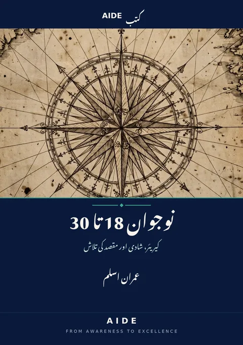

اٹھارہ سے تیس — ہر فیصلہ دباؤ میں کیوں ہوتا ہے؟
کیریئر، شادی، مقصد — سب ایک ساتھ بولتے ہیں۔
پہلے سوال صاف ہوں — پھر جواب۔
سوئی ٹھہرے تو راستہ دکھائی دیتا ہے۔
سمت ملے تو قدم خود بنتا ہے۔
نقشہ آپ کا — سمت آپ کی۔

نوجوان 18 تا 30
افتتاحی رعایت 31 دسمبر 2026 تک · 175 صفحات · 11 ابواب · مشق نامہ مفت